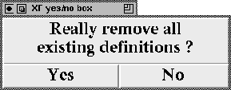

Calling this procedure pops up a yes/no box asking the user if he really wants to remove all existing definitions. If the user answers yes, the current application is removed from the interpreter. This procedure gets no parameters.

Figure: The procedure XFProcFileNew